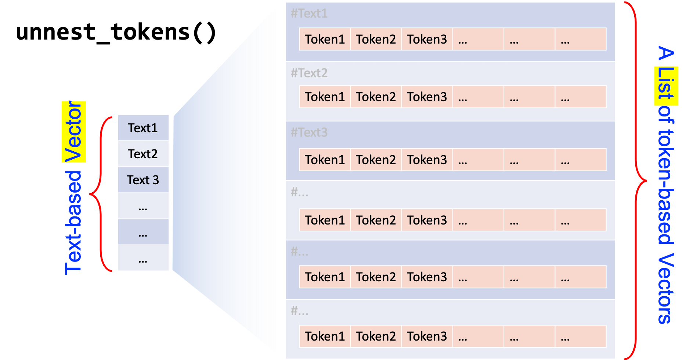

Chinese Word Segmentation
library(tidyverse)
library(quanteda)
library(quanteda.textplots)
library(quanteda.textstats)
library(readtext)
library(tidytext)
library(jiebaR)
library(wordcloud2)
## Windows-only
## Uncomment to set locale
# Sys.setlocale(category = "LC_ALL", locale = "cht")Before we perform any analysis on the Chinese data, we need to fix the issue of word tokenization.
Unlike English, where each word token is delimited by white spaces, Chinese word tokens are much less straightforward. A word, however, is an important semantic unit in many linguistic analysis.
In this workshop, I will introduce a frequently used library, jiebaR, for Chinese word segmentation.
Chinese Word Segmenter jiebaR
A Quick Example
Now let’s take a look at a quick example. Let’s assume that in our corpus, we have collected only two documents, each consisting of only one short paragraph.
## Simple corpus data
sents <- c("綠黨桃園市議員王浩宇爆料，指民眾黨不分區被提名人蔡壁如、黃瀞瑩，在昨（6）日才請辭是為領年終獎金。台灣民眾黨主席、台北市長柯文哲7日受訪時則說，都是按流程走，不要把人家想得這麼壞。",
"新北消防救護人員說，119在疫情的期間，除肩負協助確診患者送醫的任務，仍需負擔每天超過500件以上的緊急救護案件，疫情期間稍一不慎，極可能造成到院前，緊急救護能量和醫療體系的崩壞；目前確診案件不斷的增加，國家面臨疫情是在清零與共存政策間的戰略上，指引的調整勢必勢在必行。")To use jiebaR, there are two important steps:
- Initialize a
jiebarobject usingworker() - Tokenize the texts into words using the function
segment()with the initializedjiebaRobject created earlier
For example, in the following code chunk, we first initialize a jiebaR object, i.e., seg1, using worker() and use this as our segmentation model to tokenize our texts into words with segment(sents, jiebar = seg1).
## quicl example of word-seg
seg1 <- worker()
segment(sents, jiebar = seg1) [1] "綠黨" "桃園市" "議員" "王浩宇" "爆料" "指民眾"
[7] "黨" "不" "分區" "被" "提名" "人"
[13] "蔡壁如" "黃" "瀞" "瑩" "在昨" "6"
[19] "日" "才" "請辭" "是" "為領" "年終獎金"
[25] "台灣民眾" "黨" "主席" "台北" "市長" "柯文"
[31] "哲" "7" "日" "受訪" "時則" "說"
[37] "都" "是" "按" "流程" "走" "不要"
[43] "把" "人家" "想得" "這麼" "壞" "新北"
[49] "消防" "救護" "人員" "說" "119" "在"
[55] "疫情" "的" "期間" "除" "肩負" "協助"
[61] "確診" "患者" "送醫" "的" "任務" "仍"
[67] "需" "負擔" "每天" "超過" "500" "件"
[73] "以上" "的" "緊急" "救護" "案件" "疫情"
[79] "期間" "稍" "一" "不慎" "極" "可能"
[85] "造成" "到" "院前" "緊急" "救護" "能量"
[91] "和" "醫療" "體系" "的" "崩壞" "目前"
[97] "確診" "案件" "不斷" "的" "增加" "國家"
[103] "面臨" "疫情" "是" "在" "清零" "與"
[109] "共存" "政策" "間" "的" "戰略" "上"
[115] "指引" "的" "調整" "勢必" "勢在必行"Parameters Setting of jiebaR
There are many different parameters we can specify when we initialize the jiebar object (See the documentation in ?work()).
Important parameters include:
type = ...: The type of the segmenter’s modeluser = ...: A path to the user-defined dictionarystop_word = ...: A path to the stopword listsymbol = FALSE: Whether to return symbols (the default isFALSE, i.e.,jiebaRremoves tokens symbols by default)bylines = FALSE: Whether to return a list or not (crucial if you are usingtidytext::unnest_tokens())
User-defined dictionary
From the above example, it is clear to see that some of the words have not been correctly identified by jiebaR: for example, 民眾黨, 不分區, 黃瀞瑩, 柯文哲.
It is always recommended to include a user-defined dictionary when tokenizing your texts because different corpora may have their own unique vocabulary (i.e., domain-specific lexicon).
So, we can pack all new words in one text file:
## check user-dictionary file
readLines("demo_data/dict-ch-user-demo.txt", encoding = "UTF-8")[1] "民眾黨" "不分區" "黃瀞瑩" "柯文哲"And include this user-defined dictionary path when initializing the jiebaR:
## User-defined dictionary
seg2 <- worker(user = "demo_data/dict-ch-user-demo.txt")
segment(sents, seg2) [1] "綠黨" "桃園市" "議員" "王浩宇" "爆料" "指"
[7] "民眾黨" "不分區" "被" "提名" "人" "蔡壁如"
[13] "黃瀞瑩" "在昨" "6" "日" "才" "請辭"
[19] "是" "為領" "年終獎金" "台灣" "民眾黨" "主席"
[25] "台北" "市長" "柯文哲" "7" "日" "受訪"
[31] "時則" "說" "都" "是" "按" "流程"
[37] "走" "不要" "把" "人家" "想得" "這麼"
[43] "壞" "新北" "消防" "救護" "人員" "說"
[49] "119" "在" "疫情" "的" "期間" "除"
[55] "肩負" "協助" "確診" "患者" "送醫" "的"
[61] "任務" "仍" "需" "負擔" "每天" "超過"
[67] "500" "件" "以上" "的" "緊急" "救護"
[73] "案件" "疫情" "期間" "稍" "一" "不慎"
[79] "極" "可能" "造成" "到" "院前" "緊急"
[85] "救護" "能量" "和" "醫療" "體系" "的"
[91] "崩壞" "目前" "確診" "案件" "不斷" "的"
[97] "增加" "國家" "面臨" "疫情" "是" "在"
[103] "清零" "與" "共存" "政策" "間" "的"
[109] "戰略" "上" "指引" "的" "調整" "勢必"
[115] "勢在必行"The format of the user-defined dictionary is a text file, with one word per line. Also, the default encoding of the dictionary is UTF-8.
Please note that in Windows, the default encoding of a Chinese txt file created by Notepad may not be UTF-8. (Usually, it is encoded in big-5).
Also, files created by MS Office applications tend to be less transparent in terms of their encoding.
Stopwords
When we initialize the worker(), we can also specify a stopword list, i.e., words that we do not need to include in the later analyses.
For example, in text mining, functional words are usually less informative, thus often excluded in data processing.
## check stopword demo file
readLines("demo_data/stopwords-ch-demo.txt", encoding = "UTF-8")[1] "日" "都" "是" "的"## Stopwords
seg3 <- worker(user = "demo_data/dict-ch-user-demo.txt",
stop_word = "demo_data/stopwords-ch-demo.txt")
segment(sents, seg3) [1] "綠黨" "桃園市" "議員" "王浩宇" "爆料" "指"
[7] "民眾黨" "不分區" "被" "提名" "人" "蔡壁如"
[13] "黃瀞瑩" "在昨" "6" "才" "請辭" "為領"
[19] "年終獎金" "台灣" "民眾黨" "主席" "台北" "市長"
[25] "柯文哲" "7" "受訪" "時則" "說" "按"
[31] "流程" "走" "不要" "把" "人家" "想得"
[37] "這麼" "壞" "新北" "消防" "救護" "人員"
[43] "說" "119" "在" "疫情" "期間" "除"
[49] "肩負" "協助" "確診" "患者" "送醫" "任務"
[55] "仍" "需" "負擔" "每天" "超過" "500"
[61] "件" "以上" "緊急" "救護" "案件" "疫情"
[67] "期間" "稍" "一" "不慎" "極" "可能"
[73] "造成" "到" "院前" "緊急" "救護" "能量"
[79] "和" "醫療" "體系" "崩壞" "目前" "確診"
[85] "案件" "不斷" "增加" "國家" "面臨" "疫情"
[91] "在" "清零" "與" "共存" "政策" "間"
[97] "戰略" "上" "指引" "調整" "勢必" "勢在必行"POS Tagging
In addition to word tokenization, jiebaR also supports parts-of-speech (POS) tagging. That is, for each word, jiebaR can also provide its part-of-speech tag.
We can get the POS annotations by specifying type = "tag" when we initialize the worker().
The returned object is a named character vector, i.e., the POS tags of the words are included in the names of the vectors.
## POS Tagging
seg4 <- worker(type = "tag",
user = "demo_data/dict-ch-user-demo.txt",
stop_word = "demo_data/stopwords-ch-demo.txt")
segment(sents, seg4) n ns n x n n x
"綠黨" "桃園市" "議員" "王浩宇" "爆料" "指" "民眾黨"
x p v n x x x
"不分區" "被" "提名" "人" "蔡壁如" "黃瀞瑩" "在昨"
x d v x n x x
"6" "才" "請辭" "為領" "年終獎金" "台灣" "民眾黨"
n ns n x x v x
"主席" "台北" "市長" "柯文哲" "7" "受訪" "時則"
zg p n v df p n
"說" "按" "流程" "走" "不要" "把" "人家"
x r a x n v n
"想得" "這麼" "壞" "新北" "消防" "救護" "人員"
zg m p n f p n
"說" "119" "在" "疫情" "期間" "除" "肩負"
v v n v n zg v
"協助" "確診" "患者" "送醫" "任務" "仍" "需"
v r v m zg f a
"負擔" "每天" "超過" "500" "件" "以上" "緊急"
v n n f zg m a
"救護" "案件" "疫情" "期間" "稍" "一" "不慎"
d v v v s a v
"極" "可能" "造成" "到" "院前" "緊急" "救護"
n c n n v t v
"能量" "和" "醫療" "體系" "崩壞" "目前" "確診"
n d v n v n p
"案件" "不斷" "增加" "國家" "面臨" "疫情" "在"
z zg v n f n f
"清零" "與" "共存" "政策" "間" "戰略" "上"
v vn d i
"指引" "調整" "勢必" "勢在必行" Every POS tagger has its own predefined tag set. The following table lists the annotations of the POS tag set used in jiebaR:
Chinese Text Analytics Pipeline
Below is a quick overview of the Chinese Text Analytics Flowchart (Figure 1).
In this workshop, I will introduce two methodological frameworks to process Chinese corpus data:
TidytextFrameworkQuantedaFramework
As these two packages are more optimized for the English language, I will highlight a few important steps that require more attention with respect to Chinese word segmentation.
Figure 1: Chinese Text Analytics Flowchart
Quanteda Framework
To perform word tokenization using jiebaR under the Quanteda framework, we need to create the tokens object using the segment() from jiebaR.
The steps are very straightforward. We utilize jiebaR for word tokenization like before:
- Initialize a
jiebarmodel; - Use it to tokenize the corpus text with
segment(); - Convert the object into a
tokenswithas.tokens().
The key is that we need to convert the output of segment() from a list to a tokens using as.tokens().
# initialize segmenter
my_seg <- worker(user = "demo_data/dict-ch-user-demo.txt",
symbol= TRUE,
bylines = TRUE)
## create tokens based on self-defined segmentation
text_tokens <- as.tokens(segment(sents, my_seg))With this tokens object, we can apply kiwc() or other Quanteda-supported processing to the corpus data.
## keyword-in-context
kwic(text_tokens,
pattern = "柯文哲")kwic(text_tokens,
pattern = ".*?[台市].*?", valuetype = "regex")In Quanteda, there is a quanteda-native Chinese tokenizer, tokens(). However, its performance is very limited and it does not support user-defined dictionary. Therefore, I would suggest using one’s own self-defined tokenizer for Chinese word segmentation.
## Examples of using quanteda-native
## Word segmentation
## create corpus object
text_corpus <- corpus(sents)
## summary
summary(text_corpus)
## Create tokens object
text_tokens <- tokens(text_corpus)
## Check quanteda-native word tokenization result
text_tokens[[1]]
[1] "綠黨" "桃園市" "議員" "王" "浩" "宇"
[7] "爆" "料" "，" "指" "民眾" "黨"
[13] "不" "分區" "被" "提名" "人" "蔡"
[19] "壁" "如" "、" "黃" "瀞" "瑩"
[25] "，" "在" "昨" "（" "6" "）"
[31] "日" "才" "請辭" "是" "為" "領"
[37] "年終獎金" "。" "台灣" "民眾" "黨主席" "、"
[43] "台北市" "長" "柯" "文" "哲" "7"
[49] "日" "受" "訪" "時" "則" "說"
[55] "，" "都是" "按" "流程" "走" "，"
[61] "不要" "把" "人家" "想得" "這麼" "壞"
[67] "。"
## KWIC
kwic(text_tokens, pattern = "柯文哲")kwic(text_tokens, pattern = "柯")From the above example, it is clear to see that quite a few word tokens have not been successfully identified by the Quanteda-native word segmentation (e.g., proper names like 柯文哲, 王浩宇). This would also have great impact on the effectiveness of kwic() as well. Therefore analysis based on the Quanteda-native segmentation can be very limited.
Tidytext Framework
Now let’s turn to the Titytext framework of text processing.
The tidytext package is made for the handling of the tidy text format of the corpus data, i.e., to process textual data on the basis of data frames.
With a data frame format of the text data, we can manipulate the text data with a standard set of tidy tools and packages in R, including dplyr, tidyr, and ggplot2.
In the tidytext format, the tokenization is taken care of by unnest_tokens().
# Create a text-based data frame
corp_df <- data.frame(text_id = c(1,2),
text = sents)
corp_dfThen, we use unnest_tokens() to tokenize the text-based data frame (corp_df) into a word-based data frame (corp_df_word).
Texts included in the text column are tokenized into words, which are unnested into independent rows in the word column of the new data frame.

# tokenization
corp_df_word <- corp_df %>%
unnest_tokens(
word, ## name for new tokens to be unnested
text, ## name for original larger units
token = function(x) ## self-defined tokenization method
segment(x, jiebar = my_seg)
)
corp_df_wordIt can be seen that for the token parameter in unnest_tokens(), we use an anonymous function based on jiebaR and segment() for self-defined Chinese word segmentation.
This is called anonymous functions because it has not been assigned to any object name in the current R session.
You may check R language documentation for more detail on Writing Functions.